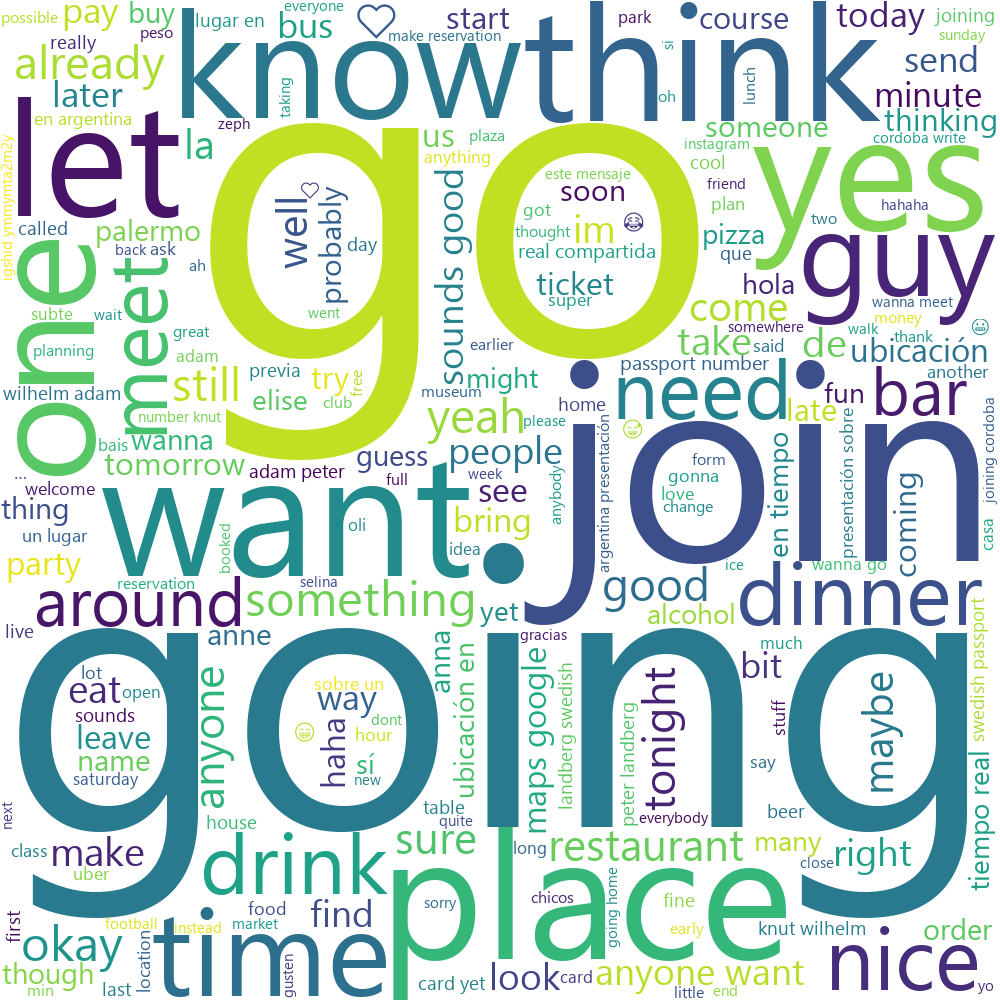

For this TP I analysed a groupchat I am in with 12 other exhange students. We started this groupchat to hang out with each other and for questions. I was interested in my role in this group chat, and how this group chat has influenced my first weeks in Buenos Aires.
After cleaning in Python, I made a dashboard in Tableau. Note that the students in the group have been anonymized just to be sure. I am number 12. The top chart shows number of messages over (adjustable!) time. The chart below the running sum, and the one below that the number of messages per day as a percentage of how many messages the person has posted in total. Lastly, the stacked chart represents the total messages per person.
I also made a wordweb using the wordcloud package in python, including emoji's of the group. The bigger the word, the more it is used.
